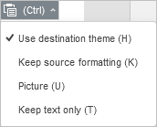

Kopiranje/lepljenje podataka, poništavanje/ponavljanje radnji
Korišćenje osnovnih operacija ostave
Da biste isekli, kopirali i nalepili izabrane objekte (slajdove, delove teksta, automatske oblike) u Uređivaču prezentacija ili poništili/ponovili svoje radnje, koristite odgovarajuće opcije iz kontekstnog menija, prečice na tastaturi ili ikone dostupne na bilo kojoj kartici gornje trake sa alatkama:
- Iseci – izaberite objekat i koristite opciju Iseci iz kontekstnog menija ili ikonu Iseci na gornjoj traci sa alatkama da biste uklonili izbor i poslali ga u privremenu memoriju računara. Isečeni podaci se kasnije mogu umetnuti na drugo mesto u istoj prezentaciji.
- Kopiraj – izaberite objekat i koristite opciju Kopiraj iz kontekstnog menija ili ikonu Kopiraj na gornjoj traci sa alatkama da biste kopirali izbor u privremenu memoriju računara. Kopirani objekat se kasnije može umetnuti na drugo mesto u istoj prezentaciji.
- Nalepi – pronađite mesto u prezentaciji gde želite da nalepite prethodno kopirani objekat i koristite opciju Nalepi iz kontekstnog menija ili ikonu Nalepi na gornjoj traci sa alatkama. Objekat će biti umetnut na trenutnu poziciju kursora. Objekat može biti prethodno kopiran iz iste prezentacije, iz druge prezentacije, iz drugog editora ili iz nekog drugog programa.
U onlajn verziji, sledeće kombinacije tastera koriste se samo za kopiranje ili lepljenje podataka iz/u drugu prezentaciju ili neki drugi program, dok se u desktop verziji i odgovarajuća dugmad/opcije menija i kombinacije tastera mogu koristiti za sve operacije kopiranja/lepljenja:
- kombinacija tastera Ctrl+X za isecanje (Cmd+X za macOS);
- kombinacija tastera Ctrl+C za kopiranje (Cmd+C za macOS);
- kombinacija tastera Ctrl+V za lepljenje (Cmd+V za macOS).
Korišćenje funkcije Posebno lepljenje
Napomena: za zajedničko uređivanje, funkcija Posebno lepljenje dostupna je samo u režimu zajedničkog uređivanja Strogi.
Kada se kopirani podaci nalepe, dugme Posebno lepljenje pojavljuje se pored umetnutog dela teksta/objekta. Kliknite na ovo dugme da biste izabrali potrebnu opciju lepljenja ili koristite taster Ctrl da biste otvorili meni Posebno lepljenje, a zatim pritisnite taster slova naveden u zagradi pored opcije.
Prilikom lepljenja delova teksta dostupne su sledeće opcije:
- Koristi temu odredišta (Ctrl zatim H) – omogućava primenu formatiranja definisanog temom trenutne prezentacije. Ova opcija se koristi podrazumevano.
- Zadrži izvorno formatiranje (Ctrl zatim K) – omogućava zadržavanje izvornog formatiranja kopiranog teksta.
- Slika (Ctrl zatim U) – omogućava lepljenje teksta kao slike tako da se ne može uređivati.
- Zadrži samo tekst (Ctrl zatim T) – omogućava lepljenje teksta bez njegovog originalnog formatiranja.

Prilikom lepljenja objekata (automatski oblici, grafikoni, tabele) dostupne su sledeće opcije:
- Koristi temu odredišta (Ctrl zatim H) – omogućava primenu formatiranja definisanog temom trenutne prezentacije. Ova opcija se koristi podrazumevano.
- Slika (Ctrl zatim U) – omogućava lepljenje objekta kao slike tako da se ne može uređivati.
Da biste omogućili/onemogućili automatsko pojavljivanje dugmeta Posebno lepljenje nakon lepljenja, idite na karticu Datoteka > Napredna podešavanja i označite/poništite izbor u polju Prikaži dugme Opcije lepljenja kada se sadržaj nalepi.
Korišćenje operacija Poništi/Ponovi
Da biste poništili/ponovili svoje radnje, koristite odgovarajuće ikone na levoj strani zaglavlja editora ili prečice na tastaturi:
- Poništi – koristite ikonu Poništi da biste poništili poslednju izvršenu operaciju.
-
Ponovi – koristite ikonu Ponovi da biste ponovili poslednju poništenu operaciju.
Takođe možete koristiti kombinaciju tastera Ctrl+Z za poništavanje ili Ctrl+Y za ponavljanje.
Napomena: kada zajednički uređujete prezentaciju u režimu Brzi, mogućnost Ponovi poslednju poništenu operaciju nije dostupna.